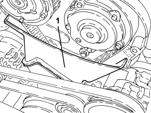

1032D28 FRONT (INTERMEDIATE) TIMING PROTECTIVE COVER - R.R.
- Path
- Procedures > 10 ENGINE > 1032 TIMING SYSTEM > 1032D TIMING SYSTEM PROTECTIONS > 1032D28 FRONT (INTERMEDIATE) TIMING PROTECTIVE COVER - R.R.
- Kind
- repair procedure (removal / refitting; the operation number is the code)
- Applies to
- engines: 1.8; all production periods
- Interactive page
- https://sloeber94.github.io/elrnDB-fCrm/en/#/194003018
Applies to: engines: 1.8; all production periods
 Removing
Removing
 Refitting
RefittingOp. 1032D26 TIMING SYSTEM FRONT PROTECTIVE COVER (UPPER PART) - R.R.
Op. 1008B10 POWER UNIT FRONT SUPPORT FLEXIBLE MOUNTING (TIMING SIDE) - REPLACE
Op. 1008A46 POWER UNIT RIGID SUPPORT - TIMING SIDE - R.R.
1. Remove the protective cover for the intermediate timing control which is a press fit on the internal cover.

Applies to: engines: 1.8; all production periods
Refitting
Removing- Place the protective cover for the intermediate timing control in its housing.
Op. 1008A46 POWER UNIT RIGID SUPPORT - TIMING SIDE - R.R.
Op. 1008B10 POWER UNIT FRONT SUPPORT FLEXIBLE MOUNTING (TIMING SIDE) - REPLACE
Op. 1032D26 TIMING SYSTEM FRONT PROTECTIVE COVER (UPPER PART) - R.R.
Topics linked from this page (3)
- 1008A46 POWER UNIT RIGID SUPPORT - TIMING SIDE - R.R.
- 1008B10 POWER UNIT FRONT SUPPORT FLEXIBLE MOUNTING (TIMING SIDE) - REPLACE
- 1032D26 TIMING SYSTEM FRONT PROTECTIVE COVER (UPPER PART) - R.R.